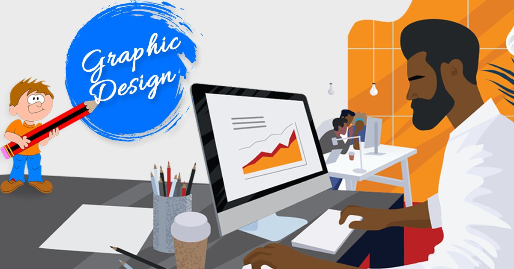

TRAVEL .IO
TRAVEL .IOHow to Accelerate Your Design Career

In this interview, Susan Lin shares her fascinating story of how she methodically used strategy to land a lead design position at Cloudflare. Leveraging tactics such as goal setting and finding a tribe of mentors (friendtors).
Hey Susan, nice to meet you. Let’s start off with who you are and how you got into design?
Hello! Thanks for having me Jan.
I’m now a Lead Product Designer at Cloudflare. Cloudflare
powers 10% of global internet traffic and serves 2.8 million
users each month. I manage the design team at headquarters. We
are building world-class products to keep the internet up and
safe.
As a design lead, I’ve worked in cross-functional
multidisciplinary teams for the past 10+ years. Notably, I
designed HealthCare.gov's application experience and built
Trulia's first design system. I studied at CMU and graduated
with the Masters in HCI.
For my ninth birthday, I raised funds for my first PC booting
Windows 95. I got my bearings building websites on Neopets and
Geocities. My dad gave me my first paid design gig. I got paid
$50 to make a Chinese restaurant menu in Microsoft Word. I’ve
come a long way since then.
You’ve recently taken a step up to become a Lead Product Designer, what motivated you to take that leap?
Becoming Lead was the reach goal. I had only expected to correct my level to Senior IC. A few months ago, I hired my career strategist. During my learning journey, we discovered I was underleveled, and thus, underpaid. Iyo, my strategist, leveraged my strong sense of justice. After I couldn’t correct my level at work, it motivated me to take on this search with gusto. I interviewed for Lead roles in conjunction with Senior IC roles. If you’re curious about the specifics, I detail my job search strategy in my letter for Desk Lunch.
What qualities do you think is important to have or develop as a leader?
I believe in servant leadership, but there are different
flavors to effective leadership. Lara Hogan breaks this down
well in her post Leadership Style Colors. At this time, this
is how I see my style. It’s a mixture of high EQ and blunt
urgency. Iyo called this my “gently fierce leadership.” This
style is not thought of in the workplace. It’s powerful paired
with the typical bold, charismatic leadership lauded in tech.
The most important thing is to ensure the people you serve are
the priority. A leader must be able to hold conflicting
incentives. There is often tension between business needs,
engineering feasibility, and perfect user experience. The most
effective hold those incentives together and produce the best
outcome. We need more integrative leadership in the workplace.
Could you tell us a little bit about goal setting and how you’re using it in your professional life?
Sure, I use a framework which keeps my goals flexible. I pick
3 overarching themes and set targets at 3 intervals: 1 year, 6
months, and 3 months out. Here is an example of a theme and
how I imagine the targets.
#::1 year out: Make 10 submissions to speak on the stage. Best
case, I get to select from stellar opportunities. Worst case,
I have a better idea of where my gaps are.
#::6 months out: Aim to present once by then, use a local
event as a fallback if no accepted submissions.
#::3 months out: Outline written. Slide theme designed. The
essence of the content exists.
Now that you’re in a position to decide who gets to play on your team, what do you look for when interviewing new designers?
Oh, I definitely have opinions on this. This is the first time
I will be hiring a manager, but I have served on the hiring
panel for almost all my previous roles. To measure candidates,
I like to use a 1 to 4 scale. This way, there are no neutral
ratings. 3’s are great, 4 is stellar, 2 is no, and 1 is a
reason to stop interviewing.
For Product Designers, I look for those who can design for and
within a system. These designers value the success of the team
in balance with the success of themselves. They have a strong
sense of fairness. I care less about pure technical ability.
Yes, it’s important to have confidence a designer can iterate
alone.